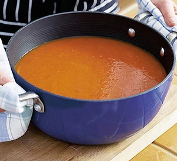

Tomato Soup Recipe

Ingredients:
- 2 tablespoons of olive oil
- 1 onion, chopped
- 2 cloves of garlic, minced
- 1 carrot, chopped
- 1 celery stalk, chopped
- 1 can (28 ounces) of crushed tomatoes
- 4 cups of vegetable broth
- 1 teaspoon of sugar
- 1/2 teaspoon of dried basil
- 1/2 teaspoon of dried oregano
- Salt and pepper to taste
- 1/2 cup of heavy cream (optional)
- Fresh basil leaves for garnish
Instructions:
- In a large pot, heat the olive oil over medium heat.
- Add the onion, garlic, carrot, and celery to the pot. Cook for 5-7 minutes, or until the vegetables are soft.
- Add the crushed tomatoes, vegetable broth, sugar, basil, oregano, salt, and pepper to the pot. Stir to combine.
- Bring the soup to a boil, then reduce the heat and simmer for 20-30 minutes.
- Using an immersion blender, blend the soup until smooth. Alternatively, transfer the soup to a blender and blend until smooth, then return to the pot.
- If using, stir in the heavy cream until well combined.
- Season the soup with additional salt and pepper if needed.
- Serve the soup hot, garnished with fresh basil leaves.